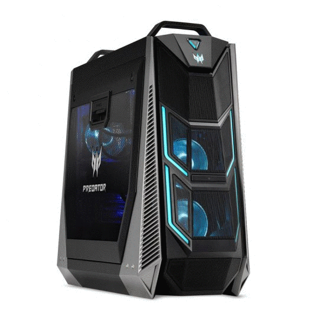
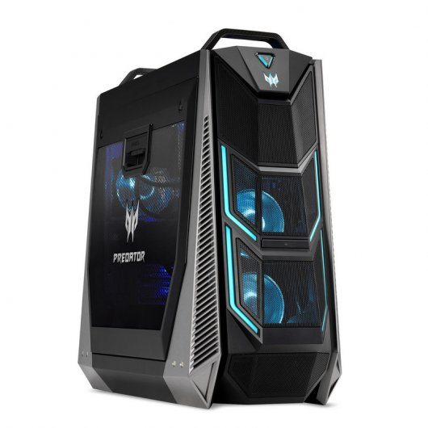
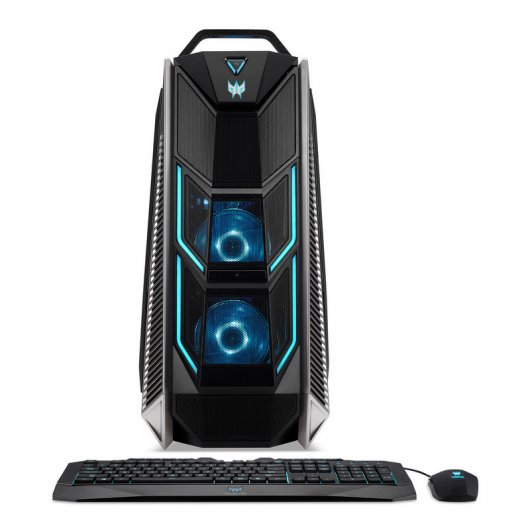
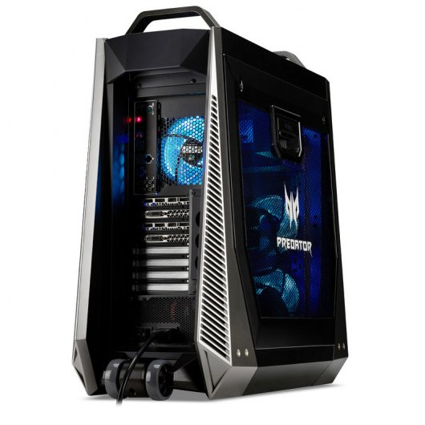
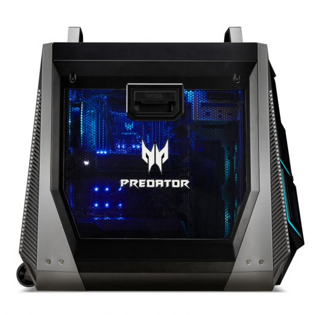

FUTURETECH STORE |
|      |
Acer Predator PO9
2999€
Disfruta de tus mejores juegos con el ordenador gaming Acer Predator PO9-900. Su gran carcasa se construyó para adaptarse, integrarse y hacer realidad tus necesidades en cuanto a Gaming o tareas de alta intensidad.
El rendimiento adopta un significado totalmente nuevo con una CPU Intel® Core. ¿Creativo? ¿Entusiasta? ¿Jugador? Todos estos adjetivos se aplican aquí. Con espacio suficiente para varias tarjetas gráficas, podrás afrontar prácticamente cualquier tarea que tengas en mente. Editar, procesar, jugar... lo que tú quieras. Con ocho ranuras DIMM que podrás manipular a tu gusto.
La malla de metal superior desmontable y los paneles laterales extraíbles sin esfuerzo te proporcionan la carcasa con la que los constructores de PC sueñan. El siguiente paso: ¡modding! El panel lateral transparente que cumple con la EMI es digno de admirar (gracias, iluminación RGB) y tiene la ventaja añadida de reducir las interferencias electrónicas entrantes. Cabe preguntarse, ¿cómo se puede mover una montaña? En este caso, añadiendo dos asas en la parte superior y unas ruedas muy cómodas en la parte posterior.
Este equipo se ha diseñado para crecer (y ampliarse) y convertirse así en el bastión tanto de los que hacen muchas tareas como de los jugadores veteranos. Los azules profundos (o los colores que tú elijas) y los fríos verdes azulados salen a raudales de los LED y los ventiladores escondidos dentro de la carcasa, lo que te dará una sensación casi glacial. Una barra de luz en el lateral izquierdo superior de la carcasa ilumina los componentes internos para mostrar tu creación.
Acer Predator PO9-900 usa una tecnología de gestión del flujo de aire que utiliza el diseño de la carcasa al separar las zonas térmicas con el objetivo de sacar el máximo partido a la refrigeración donde más se necesita. Existen cuatro zonas térmicas. La zona de la PSU es autónoma, mientras que la GPU, la CPU y las zonas de almacenamiento dividen el aire frío entrante entre los dos laterales de la carcasa.
Realidad virtual. Está por todas partes, mejorando constantemente y ofreciendo una experiencia cada vez más divertida. Esta máquina está más que preparada: no temas y lánzate.
Especificaciones
Procesador Intel Core i7 7800X LGA 3.5G 8M 2400 1151 140W Sky Lake-X
Memoria RAM 16GB UNB-DIMM DDRIV 8 slots
Almacenamiento M.2 256GB SSD + HDD 3.5" 7200rpm 1000GB
Unidad óptico DVD-Writer
Controlador gráfico Nvidia GTX 1080 8GB DVI-D/HDM/DP/DP/DP VIRTUAL
Audio Creative Sound BlasterX 720°
Conectividad
Wireless LAN: AC 2T x 2R
Bluetooth 4.0
Conexiones
Audio jacks x 2
DVI Port x 1
LAN Port x 1
Type-C port x 2
USB2.0 x 2
USB3.1 Gen1 x 4 Frontal x 4 Detrás
Number of PCIe x16 slot x 4
Teclado y ratón incluido
Sistema operativo Microsoft Windows 10 Home 64bits
Dimensiones (Ancho x Profundidad x Altura) 701.86 x 299.73 x 643.13 mm
Peso 20 Kg
Color Negro
|


{kind=link}
{kind=link}
{kind=link}
{kind=link}